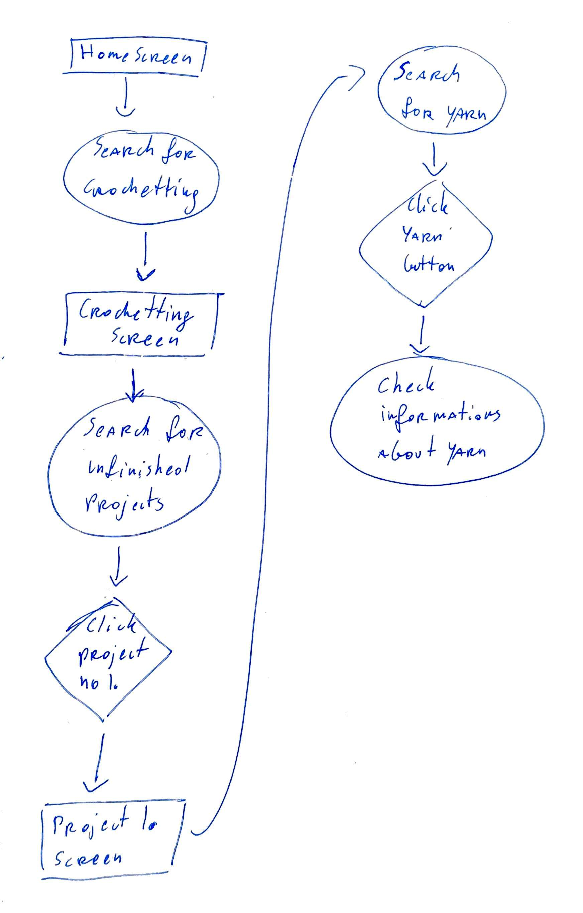
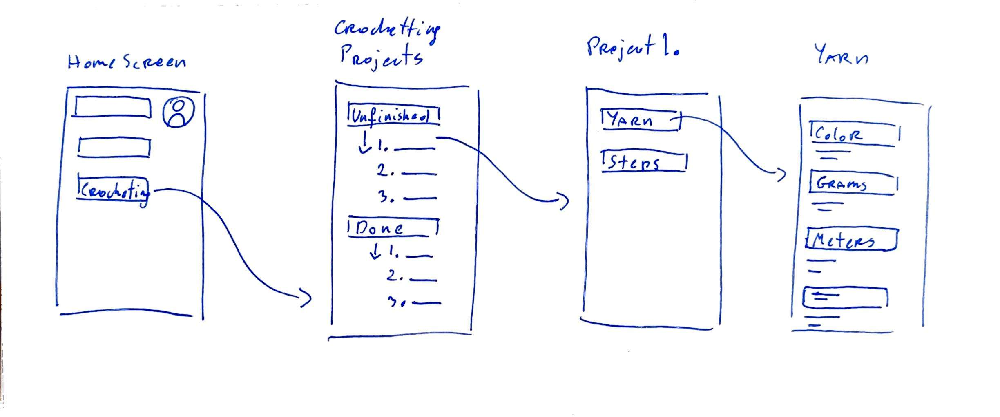
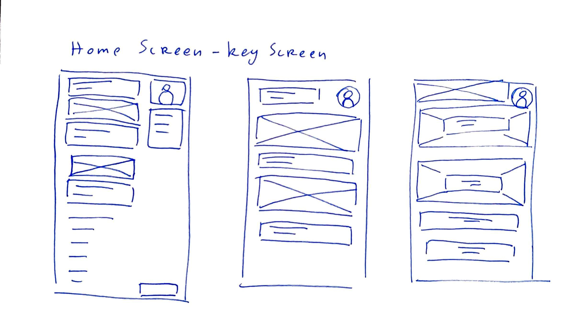

User have to find their unfinished crochete project and check what yarn they have to use for the project.
User flow:

Wireframe:

Alternative designs for the key screen- Home screen:
I think screen number 3 will be the best option

Reviewed by Aldona Kozłowska